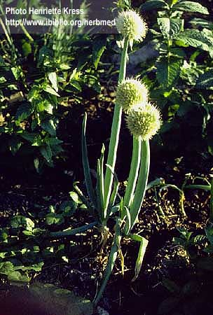

|
ECONOMICALLY
IMPORTANT PLANTS OF INDIA |
| Under-utilized Food and Fodder species and their wild relatives | Contributed by Ms.M.L Annapurna And Dr. Dhanapal, UAS, Bangalore |
Allium fistulosum L.
----- Taxonomic Details

----- Correct Name
----- Classification
----- Synonyms
----- Common Names
Other Biological Details
----- Habit and Habitat
----- Diagnostic Features
----- Reproductive Biology
---------- Breeding System
---------- Phenology
---------- Pollinators
---------- Seed Biology
---------- Seed Germination
------ Cultivation
----- Major Pests and Diseases
Economic Potential and Uses
----- Parts Used
----- Uses
----- Harvesting Practices
----- Produce and Products
----- Chemistry
----- Processing Techniques
----- Other uses
----- Economic Potential to the
Country
----- Export Potential
Miscellaneous Information
Literature
REPRODUCTIVE BIOLOGY
Breeding System :
These are predominantly cross pollinated, but however are capable of self pollination.
Vigour and survival rate of seedlings derived from self-pollination are much
lower than the cross-pollination.
Programmes for crop improvement currently used are
1. simple selection of desirable individuals from the populations to use in
intercrossing and seed production.
2. the use of replicated trials and statistically based measurements of the
average performance of different individuals to choose those to be retained
and combined in an improved cultivar.
3. development of F1 and triple-cross hybrid cultivars.
New cultivars have been bred for greater resistance to bolting, more tolerance
to high temperature and improved quality.
Phenology :
Flowering occurs during spring-early summer.
Pollinators:
Highly cross pollinated crop. Usual
pollinators are insects like bees and flies
Seed Biology :
The seeds size and number per gram varies among the alliums. Seed number in
case of japanese bunching onions is 300. The embryo is curled within the seed
and consists of short root below the shoot apex. The cotyledons form the bulk
of the embryo and consists mostly of small cells densely packed with reserves
of globular fatty protein and sugar phosphate. The cells are also packed with
reserve globules of protein and lipids.
Seed
Germination:
The optimum temperature for seed germination is 15-25ºC and a soil pH of
5.7-7.4 and soil rich in phosphate is preferred. During germination the lower
portion of the cotyledons elongates first and the root emerges. The primary
root grows downwards and the slit containing the apical meristems remains at
seed sowing depth while a sharp inverted U-shaped bend develops in the
cotyledon. Then
cotyledons emerge from the soil as a loop and pulls the tip clear of the soil
before straightening up.
Cultivation:
Seeds are spring sown preferably during March for
the harvest in the following winter, or autumn sown and spring transplanted
for summer, autumn and winter harvest. The soil must be well drained loams or
sandy loams. The seedlings are transplanted in furrows about 15cm deep with about
9cm between plants in the row. Three or four times during the growth, earth
is pulled round the pseudostems, so that ultimately they are growing in earthed
up ridges. Fertilizers are applied three or four times during the growing season,
applying 200, 150 and 175 kg/ha N, P and k respectively.
MAJOR PESTS & DISEASES
Pests: Pests like stem and bulb eel worm, Ditylenches dipsaci is
a serious pest. Thrips (Thrips tabaci) is the most important pest of this crop.
Cutworms (Agrotis fucosa), mite (Rhizoglyphus echinopus), stone leaf miner
(Acrolepia alliella) are the important pests.
Diseases: Bacterial diseases: These diseases occur at temperatures of
25ºC or above and are little effecyed by humidity. 'Slippery skin' is caused
by Pseudomonas alliicola, where brown, water soaked storage scales occur within
the bulb. 'Sour skin' is caused by P. cepacia, where the outer scale becomes
slimy with a sour, vinegary smell. 'Brown rot' is caused by P. aeruginosa.
Fungal diseases:
'White rot' is caused by Sclerotium cepivorum, 'fusarium basal rot' is caused
by Fusarium oxysporum, 'onion smut' is caused by Urocystis cepulae, 'southern
blight' is caused by Sclerotium rolfsii and 'damping off' is caused by Fusarium
spp and Pythium spp. Rust (Puccinia allii) cause serious damage to the leaves.
Alternaria leaf spot (Alternaria porri), downey mildew (Peronospora
destructor),
botrytis leaf spot (Botrytis squamosa) etc are the important fungal diseases.
Viral diseases:
Three viruses have been identified in Japanese bunching onion. Most of the
viruses
are symtomless and do not cause disease. Cycas (NSV) and tomato spotted wilt
virus (TSWV).
Disease prevention depend on the elimination of the infected plants, and also
the prevention of vectors like aphids.
Parts used:
Leaves,
whole plant.
Uses:
1.The whole of the young plant may be used raw or cooked as a spring onion, or the tops may be cut and used and the clump left to produce more side shoots. Leaves are used as salad.
2.The dehydrated
product is mainly used as an additive to preprocessed food such as instant noodles.
Harvesting
Practices :
At harvest, plants are lifted by hand, trimmed,
and packed into bundles, which may then be boxed. Harvesting is very laborious.
Hence mechanical lifters have been developed. Trimmers that peel the outer leaves
using high pressure water or oil are also used.
Produce and Products :
Concentrated
flavour oils, Dehydrated products, pickles.
|
Constituent |
Pseudostem
(per 100gm edible fr.wt.)
|
Green
tops (per 100gm edible fr.wt.)
|
|
Water
(g) Proteins(g) Fat(g) Digestible
carbohydrates Vitamins -A
(IU) -B1
(µg) -B2
(µg) -Niacin
(µg) -C
(mg) Minerals Ca Fe Na K P
|
91.6 1.1 0.1 6.7
85 40 60 300 14
47 1.0
|
92.0 1.7 0.2 5.4
480 60 100 400 33 1.0 1.0 200 38 25
|
2.Brewster, J.L. (1994). Onions And Other Vegetable Onions. CAB International, Wallingford, UK. P:12-211.
3.Herklots, G.A.C. (1972). Vegetables In South-East Asia. London George Allen And Unwin LTD, Great Britain. P:387-496.
4. http://www.ibiblio.org/herbmed/pictures/p01/pages/allium-fistulosum.htm
5.Nayar.,M.P, Ramamurthy, K and Agarwal V.S. (1999) Economic plants of india, vol-1.
6..Salunkhe, D.K. and Kadam, S.S. (1998). Hand Book of Vegetable Science and Technology: Production, Composition Storage and Processing. Marcel Dekker, Inc., New York-Basel-HongKong. P:415-429.